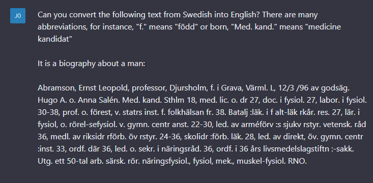
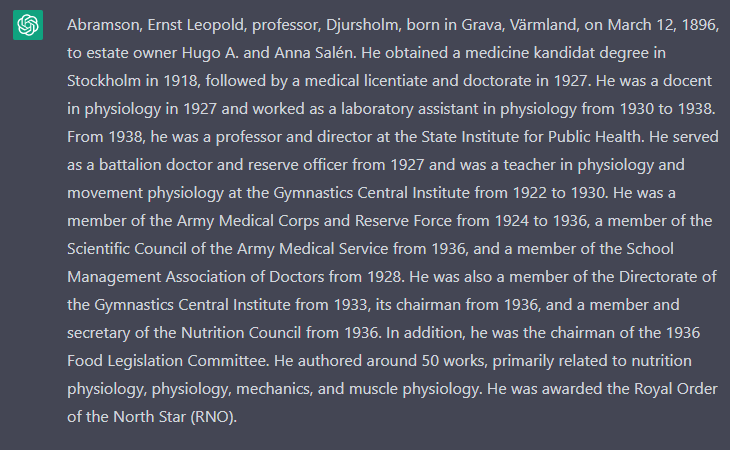
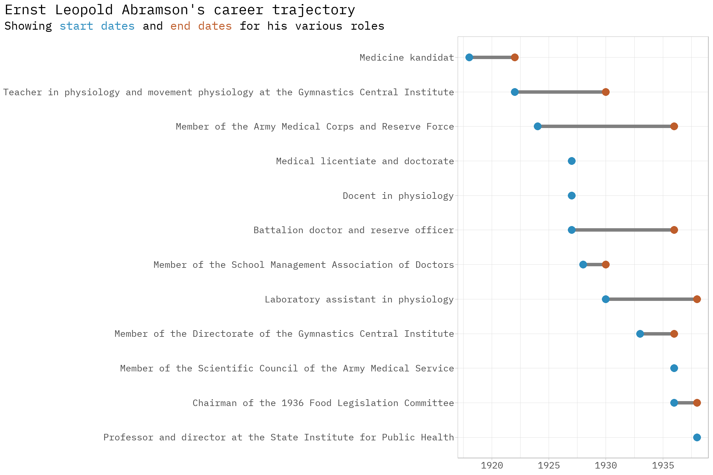

library(tidyverse)
occupations <- tibble(
start_year = c(1918, 1927, 1927, 1930, 1938, 1927, 1922, 1924, 1936, 1928, 1933, 1936),
end_year = c(NA, NA, NA, 1938, NA, 1936, 1930, 1936, NA, NA, NA, NA),
swedish_occupation = c(
"Med. kand.", "Med. lic. o. dr", "Docent i fysiol.", "Labor. i fysiol.",
"Prof. o. förest, v. stats inst. f. folkhälsan", "Batalj :läk. i f alt-läk rkår.",
"Lär. i fysiol, o. rörel-sefysiol. v. gymn. centr anst.", "Led. av arméförv :s sjukv rstyr.",
"Medl. av riksidr rförb.", "Skolidr :förb. läk.", "Led. av direkt, öv. gymn. centr :inst.",
"Ordf. i 36 års livsmedelslagstiftn :-sakk."
),
english_occupation = c(
"Medicine kandidat", "Medical licentiate and doctorate", "Docent in physiology",
"Laboratory assistant in physiology", "Professor and director at the State Institute for Public Health",
"Battalion doctor and reserve officer", "Teacher in physiology and movement physiology at the Gymnastics Central Institute",
"Member of the Army Medical Corps and Reserve Force", "Member of the Scientific Council of the Army Medical Service",
"Member of the School Management Association of Doctors", "Member of the Directorate of the Gymnastics Central Institute",
"Chairman of the 1936 Food Legislation Committee."
)
)ChatGPT as translator and text wizard
A post showing how ChatGPT can be used to create structred data from text.
Introduction
Data is the lifeblood of modern economic history. It courses through our models and charts the path of history. Yet data is often born unruly, its words jumbled and disorganized, its meaning buried under mountains of text. For the economic historian, this is an all too familiar challenge. We need to extract structure from chaos, to transform raw text into organized data that we can analyze.

But doing so by hand is a laborious and time-consuming task, one that demands hours of tedious work and a heightened attention to detail. Luckily, we live in an age of powerful AI tools, such as ChatGPT, that can help us wrangle our data and make sense of the world.
A typical problem
I am interested in a source of Swedish biographical data called Vem är Vem? (or Who is Who?), part of Projekt Runeberg, a volunteer effort to create free electronic editions of classic Scandinavian literature.
In particular I am interested in the occupational trajectories of the individuals - what job titles do they hold through the course of their lives. By extracting information on the career paths of notable Swedes, we can gain insights into the labour market dynamics of Sweden and how they have evolved over time. With this structured data, economic historians can explore questions such as the influence of education and social networks on career trajectories, the impact of technological change on the labour market, and much more.
Careful work by two librarians in Uppsala has resulted in a large selection of the source being scanned and digitized. Though the OCR engine is not perfect, the resulting text is largely legible. A typical example of the source is shown below.
The city librarian in Uppsala Paul Harnesk was the initiator and chief editor of the work Who is Who? which was published in two editions, each comprising five parts. He died in 1965 and the work was completed by the first librarian at Uppsala University Library, associate professor Åke Davidsson.
Planning
Extracting occupational trajectories from the Swedish biographical source “Vem är Vem?” comprises a two-part process. The first part involves translating the Swedish text, which is full of abbreviations and contractions, into English using the natural language processing capabilities of ChatGPT. This step is crucial for making the data accessible and understandable to researchers who may not be familiar with Swedish (like myself!).
Once the text has been translated, the second part of the process demands structuring the data into year and occupation pairs. This involves identifying mentions of job titles and dates in the text and extracting them in a structured format.
ChatGPT as translator
I simply ask ChatGPT:
Can you convert the following text from Swedish into English? There are many abbreviations, for instance, “f.” means “född” or born, “Med. kand.” means “medicine kandidat”.
It is a biography about a man:
And I paste in the OCR output:
Abramson, Ernst Leopold, professor, Djursholm, f. i Grava, Värml. L, 12/3 /96 av godsäg. Hugo A. o. Anna Salén. Med. kand. Sthlm 18, med. lic. o. dr 27, doc. i fysiol. 27, labor. i fysiol. 30-38, prof. o. förest, v. statrs inst. f. folkhälsan fr. 38. Batalj :läk. i f alt-läk rkår. res. 27, lär. i fysiol, o. rörel-sefysiol. v. gymn. centr anst. 22-30, led. av arméförv :s sjukv rstyr. vetensk. råd 36, medl. av riksidr rförb. öv rstyr. 24-36, skolidr :förb. läk. 28, led. av direkt, öv. gymn. centr :inst. 33, ordf. där 36, led. o. sekr. i näringsråd. 36, ordf. i 36 års livsmedelslagstiftn :-sakk. Utg. ett 50-tal arb. särsk. rör. näringsfysiol., fysiol, mek., muskel-fysiol. RNO.

ChatGPT returns to me the translated text, free from abbreviations and contractions:
Abramson, Ernst Leopold, professor, Djursholm, born in Grava, Värmland, on March 12, 1896, to estate owner Hugo A. and Anna Salén. He obtained a medicine kandidat degree in Stockholm in 1918, followed by a medical licentiate and doctorate in 1927. He was a docent in physiology in 1927 and worked as a laboratory assistant in physiology from 1930 to 1938. From 1938, he was a professor and director at the State Institute for Public Health. He served as a battalion doctor and reserve officer from 1927 and was a teacher in physiology and movement physiology at the Gymnastics Central Institute from 1922 to 1930. He was a member of the Army Medical Corps and Reserve Force from 1924 to 1936, a member of the Scientific Council of the Army Medical Service from 1936, and a member of the School Management Association of Doctors from 1928. He was also a member of the Directorate of the Gymnastics Central Institute from 1933, its chairman from 1936, and a member and secretary of the Nutrition Council from 1936. In addition, he was the chairman of the 1936 Food Legislation Committee. He authored around 50 works, primarily related to nutrition physiology, physiology, mechanics, and muscle physiology. He was awarded the Royal Order of the North Star (RNO).
It surprises me that ChatGPT is able to extrapolate correctly from just “RNO” (an abbreviation of the Swedish Nordstjärneorden) in the final part of the description to:
He was awarded the Royal Order of the North Star (RNO).
Fantastic!

Next I ask ChatGPT to return to us the occupational information in a structured format.
ChatGPT as interpreter
Strucutred data is our goal. Again I use a simple instruction to ask:
Great, thank you, can you extract the occupations he held and the dates for which he held them, and return the output in an R tibble with a column for start year, a column for end year (if any), a column for the Swedish description of the occupation, and a column for the English translation.
It returns the following R code:
Displaying the output
Table
I can easily take this code and turn the output into a table with a hyperlink to the source:
Code
library(gt)
occupations %>%
arrange(start_year) %>%
gt() %>%
tab_header(title = md("**Ernst Leopold Abramson's career trajectory**")) %>%
cols_label(
start_year = md("Start"),
end_year = md("End"),
swedish_occupation = md("Swedish"),
english_occupation = md("English")
) %>%
sub_missing(columns = end_year, missing_text = "") %>%
tab_spanner(md("**Duration**"), columns = c(start_year, end_year)) %>%
tab_spanner(md("**Occupation**"), columns = c(swedish_occupation, english_occupation)) %>%
tab_source_note(md("Data source: [Projekt Runeberg](http://runeberg.org/vemarvem/sthlm45/0018.html)"))| Ernst Leopold Abramson's career trajectory | |||
| Duration | Occupation | ||
|---|---|---|---|
| Start | End | Swedish | English |
| 1918 | Med. kand. | Medicine kandidat | |
| 1922 | 1930 | Lär. i fysiol, o. rörel-sefysiol. v. gymn. centr anst. | Teacher in physiology and movement physiology at the Gymnastics Central Institute |
| 1924 | 1936 | Led. av arméförv :s sjukv rstyr. | Member of the Army Medical Corps and Reserve Force |
| 1927 | Med. lic. o. dr | Medical licentiate and doctorate | |
| 1927 | Docent i fysiol. | Docent in physiology | |
| 1927 | 1936 | Batalj :läk. i f alt-läk rkår. | Battalion doctor and reserve officer |
| 1928 | Skolidr :förb. läk. | Member of the School Management Association of Doctors | |
| 1930 | 1938 | Labor. i fysiol. | Laboratory assistant in physiology |
| 1933 | Led. av direkt, öv. gymn. centr :inst. | Member of the Directorate of the Gymnastics Central Institute | |
| 1936 | Medl. av riksidr rförb. | Member of the Scientific Council of the Army Medical Service | |
| 1936 | Ordf. i 36 års livsmedelslagstiftn :-sakk. | Chairman of the 1936 Food Legislation Committee. | |
| 1938 | Prof. o. förest, v. stats inst. f. folkhälsan | Professor and director at the State Institute for Public Health | |
| Data source: Projekt Runeberg | |||
Visualization
And we can take the output and make it into a nice figure that visualizes Ernst’s career trajectory.
Code
occupations %>%
arrange(start_year) %>%
mutate(end_year_imputed = case_when(
is.na(end_year) ~ lead(start_year),
is.na(lead(start_year)) ~ start_year,
TRUE ~ end_year
)) %>%
mutate(
english_occupation = str_squish(str_remove_all(english_occupation, "[:punct:]")),
english_occupation = fct_reorder(english_occupation, start_year, .desc = TRUE)
) %>%
# pivot_longer(c(start_year, end_year_imputed)) %>%
# ggplot(aes(value, english_occupation, colour = name)) +
ggplot(aes(xmin = start_year, xmax = end_year_imputed, y = english_occupation)) +
geom_linerange(colour = "gray50", size = 2) +
geom_point(aes(x = end_year_imputed), colour = "#be5d2b", size = 4) +
geom_point(aes(x = start_year), colour = "#2B8CBE", size = 4) +
labs(
title = "Ernst Leopold Abramson's career trajectory",
subtitle = "Showing <span style = 'color:#2B8CBE;'>start dates</span> and <span style = 'color:#be5d2b;'>end dates</span> for his various roles",
x = NULL,
y = NULL
) +
theme(
legend.position = "none",
plot.subtitle = element_markdown(),
plot.title.position = "plot",
text = element_text(family = "ibm", size = 28)
)
Conclusion
Thank you for reading along. I have demonstrated how we can use unstructured text data to reconstruct career trajectories for notable Swedes, translating and structuring the biographical text data through the ChatGPT web interface.
Next week I’ll share a post on how to take this process and scale it by leveraging OpenAI’s API.
I hope that it might prove useful in your own research!